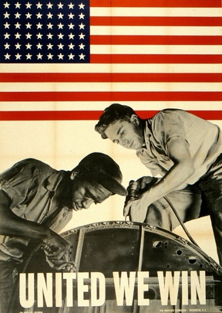
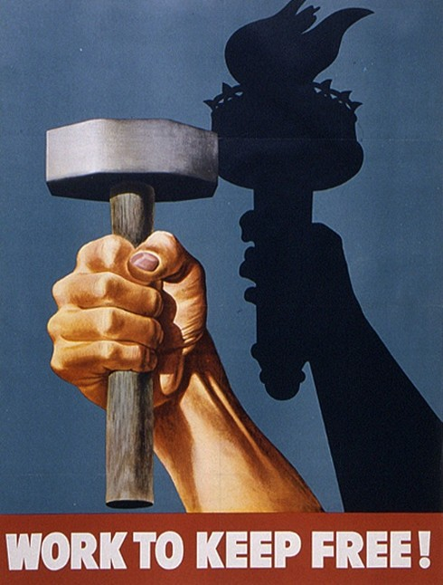

Wolfsonian Digital Labs — Hotspot Interactive
Proof of Concept
Arts of Persuasion
Select a poster below to explore the persuasion techniques used in World War II propaganda. Touch the blue markers on each image to reveal information about different methods of persuasion at work.

United We Win
Explore techniques like Transfer, Bandwagon, and Plain Folks appeal in this WWII poster.
Explore poster →

Work to Keep Free
Discover how Transfer and Patriotic Appeal were used to motivate wartime production.
Explore poster →